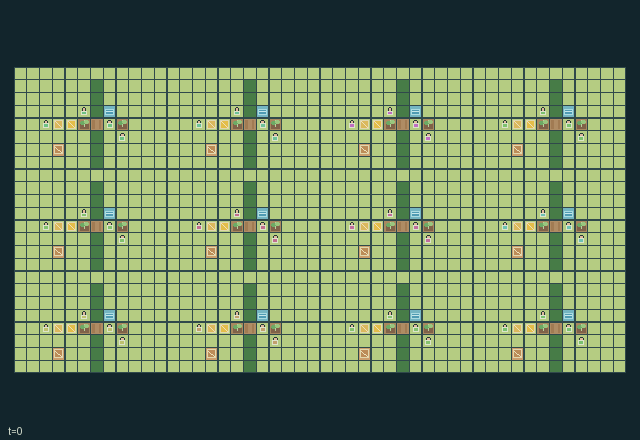

GI231 · Orchard Pollination Commons

Cultivate and ship two fruits from each of twelve household stores while maintaining local pollinator and soil conditions.
Identity and original contract
48 independently actionable roles; 23 discrete commands per role; 315 native observation columns per role; original horizon 768 steps. Declared per-step reward range: -8 to 8. Observation regime: partially_observable.
Source SHA-256: b96f8fe5123543183ed78649d8991a974ff64e0299f0a83505d29b761a179467
The objective, rewards, population, map and horizon remain original. A preview is not a success claim.
Objective and gameplay
Cultivate and ship two fruits from each of twelve household stores while maintaining local pollinator and soil conditions.
Gates and built hedges alter physical bee corridors; apiary relocation changes their flight interval and carrying suspends flight. Sluice diversion removes downstream water after one tick. Pollinators carry disease between flowering plots. Three markets each allocate one shipping slot among four competing household queues every four ticks.
- Twelve four-person households provide exactly 48 controllable actors. The twelve pollinators are separate ecology entities with no action rows.
- The valley uses actual grass, hedges, plots, orchard gates, sluices and village stores. Work on the cell you face; turn actions do not move.
- Flowering plots need at least two pollination visits and enough growth age to fruit. Grafting advances their timing; pruning reduces disease or composts a spent plot.
- Every second non-winter tick, a placed apiary's bee follows its horizontal corridor within five cells of the hive. After relocation an out-of-range bee heads back toward the hive; gates and hedges can stop and reverse it.
- Apiarists can lift and carry a hive; its bee waits until it is placed on that hive's original lane. A relocated hive changes which flowering plots its bee can reach.
- An open sluice diverts passing water to its two plots. Closing it sends water downstream. Wet soil can spread disease through visiting bees; a new barrier directly hitting a bee reduces its real health.
- Harvest with a basket and bring fruit to a store. Every four ticks each row market chooses one nonempty queue using rotating priority; other queues wait.
- This warm orchard scene is bound to source state. No native play session, animation, action effect, solvability, training or transfer has been executed.
Ending: Terminate when each household has actually shipped two fruit units; otherwise truncate at t=768. Bees are ecology entities, not controllable agents or individual agent-done rows.
What this game explores
Resource commons & externalities: An action changes a persistent resource or burden that another role also encounters. Compare extraction with maintenance and record the downstream resource trajectory.
Complementary production & service: A useful outcome requires ordered stages, scarce equipment or another role's capability. Measure real completed products and resource circulation rather than counting intermediate actions as success.
These are questions supported by rule structure, not observed learning effects.
Play it: operating walkthrough
crucibles play --game gi231Keep Python running and open its printed address. Select this game, set a seed and press Create session. The game itself is always English.
Assign a role range to Host with Assign / take over, or Assign all roles. Invite a second participant with Create player invitation, then assign a disjoint subset. Every original role is available.
For every owned role choose a legal command and press Queue. Arrow keys / WASD queue a declared directional action for the current role camera when available. Space or Advance one joint step advances everyone together. Non-directional games use the selectors.
Unqueued roles use the labelled untrained uniform-legal policy. Take over or release roles before the next step without resetting. Full-state debug is privileged and permanently logged; role cameras preserve permissions. Close the session to retain logs. Server restart does not restore sessions.
Complete command reference
IDs and English labels exactly match the manifest. Availability depends on role, resources, location and phase. An available action can still have no productive effect.
0·Wait; no movement
1·Move north
2·Move east
3·Move south
4·Move west
5·Face north
6·Face east
7·Face south
8·Face west
9·Plant facing empty or spent plot using one seed
10·Graft facing growing or flowering plot using compost
11·Prune disease or compost a spent plot
12·Harvest one ripe fruit with basket
13·Deposit one fruit in adjacent store's shipping queue
14·Fill watering can or irrigate facing plot
15·Toggle nearby sluice using watering tool
16·Open or close facing orchard gate
17·Give fruit, then water, then compost to actor ahead
18·Lift nearby apiary or place carried apiary on its original corridor lane
19·Swap tools with actor ahead
20·Signal local flowering or disease information
21·Build hedge in clear facing grass cell using compost
22·Remove facing hedge and recover compost
Roles and capability identifiers
These original role names describe capabilities, not interchangeable skins. Check each owned role's legal selector before planning handoffs.
agent_0·group 0 / tender and grafter
agent_1·group 0 / irrigator
agent_2·group 0 / apiarist
agent_3·group 0 / harvester
agent_4·group 1 / tender and grafter
agent_5·group 1 / irrigator
agent_6·group 1 / apiarist
agent_7·group 1 / harvester
agent_8·group 2 / tender and grafter
agent_9·group 2 / irrigator
agent_10·group 2 / apiarist
agent_11·group 2 / harvester
agent_12·group 3 / tender and grafter
agent_13·group 3 / irrigator
agent_14·group 3 / apiarist
agent_15·group 3 / harvester
agent_16·group 4 / tender and grafter
agent_17·group 4 / irrigator
agent_18·group 4 / apiarist
agent_19·group 4 / harvester
agent_20·group 5 / tender and grafter
agent_21·group 5 / irrigator
agent_22·group 5 / apiarist
agent_23·group 5 / harvester
agent_24·group 6 / tender and grafter
agent_25·group 6 / irrigator
agent_26·group 6 / apiarist
agent_27·group 6 / harvester
agent_28·group 7 / tender and grafter
agent_29·group 7 / irrigator
agent_30·group 7 / apiarist
agent_31·group 7 / harvester
agent_32·group 8 / tender and grafter
agent_33·group 8 / irrigator
agent_34·group 8 / apiarist
agent_35·group 8 / harvester
agent_36·group 9 / tender and grafter
agent_37·group 9 / irrigator
agent_38·group 9 / apiarist
agent_39·group 9 / harvester
agent_40·group 10 / tender and grafter
agent_41·group 10 / irrigator
agent_42·group 10 / apiarist
agent_43·group 10 / harvester
agent_44·group 11 / tender and grafter
agent_45·group 11 / irrigator
agent_46·group 11 / apiarist
agent_47·group 11 / harvester
Information and observation permissions
Local 7x7 terrain, growth stage and occupancies; self tools/stocks; up to four detailed neighbors, two plots, one apiary and four bees. Detailed entity masks are narrowed to exactly the available records. Water/store/gate state is local; coarse messages travel Manhattan 6. Public season is in each self row.
The GIF is full-state debug and may reveal hidden entities or private state. Train on obs[agent], not the picture, state tree or another role's private row. Field slices and visibility are in the original manifest.
Reinforcement-learning integration
import jax
from crucibles_jaxmarl import make
env = make("gi231")
key = jax.random.PRNGKey(0)
key, rk, ak, sk = jax.random.split(key, 4)
obs, state = jax.jit(env.reset)(rk)
actions = env.sample_actions(ak, state)
obs, state, rewards, dones, info = jax.jit(env.step_env)(sk, state, actions)
done = dones["__all__"]Observations are float32 vectors of width 315; actions are scalar int32; masks have 23 entries. Supply all 48 roles each transition. Masked sampling is an engineering reference, not a trained learner.
step_env retains terminal data without reset. step performs outer autoreset and keeps terminal data in info["raw_state"] and info["raw_observation"]. Use dones["__all__"] for episode boundaries; separate completion, failure and time limit in analysis.
JIT or vmap equal identities and shapes. Split independent reset, policy and transition keys. Group different shapes explicitly; do not shrink the population or horizon. Host rendering stays outside training.
Training questions and fair evaluation
Define valid completion from the objective before fitting. Preserve original rewards and also report real deliveries/services, losses, resource state, unresolved episodes and per-role returns. Animation is not a reward signal.
An action changes a persistent resource or burden that another role also encounters. Compare extraction with maintenance and record the downstream resource trajectory.
A useful outcome requires ordered stages, scarce equipment or another role's capability. Measure real completed products and resource circulation rather than counting intermediate actions as success.
Compare memory, communication or centralized critics under matched actor information. Declare critic access; keep actor inputs role-filtered. Match partner/opponent distributions, masks, compute and checkpoint selection. Final tests never enter fitting or selection.
Independent training runs or source-pairing blocks are inferential units; episodes from one policy are not independent training replications. Save hashes, keys, versions, device, time and cost. Negative, zero, failed and indeterminate outcomes are valid. No trained checkpoint or target score is supplied.
Classification and evidence
Overlapping editorial labels are reading aids, not proof of novelty, difficulty, strategic equivalence or learning effects.
- Resource commons & externalities
- Evidence
manifest.task.objective: Cultivate and ship two fruits from each of twelve household stores while maintaining local pollinator and soil conditions.
- Evidence
manifest.task.interaction: Gates and built hedges alter physical bee corridors; apiary relocation changes their flight interval and carrying suspends flight. Sluice diversion removes downstream water after one tick. Pollinators carry disease between flowering plots. Three markets each allocate one shipping slot among four competing household queues every four ticks.
- Evidence
manifest.task.observation_access: Local 7x7 terrain, growth stage and occupancies; self tools/stocks; up to four detailed neighbors, two plots, one apiary and four bees. Detailed entity masks are narrowed to exactly the available records. Water/store/gate state is local; coarse messages travel Manhattan 6. Public season is in each self row.
- Complementary production & service
- Evidence
manifest.task.objective: Cultivate and ship two fruits from each of twelve household stores while maintaining local pollinator and soil conditions.
Source, receipts and preview limits
The additional generated state GIF replays saved untrained legal actions through the original kernel. At most 25 actual endpoints include initial and terminal state; no invented interpolation. It is full-state debug, not the role observation. Where an original scene preview exists, it is displayed first with its own recorded information scope. The two recordings may use different trajectories and views.
Original source, observation slices, manifest and mechanism
Native receipt · Presentation receipt
Engineering passes do not establish learning. Nonzero floating differences remain recorded and undetermined; no new tolerance was introduced. Human scores remain unverified.